Quiero que sepas que eres la persona más importante para mí y que valoroun montón de manera profunda cada día contigo. Mi felicidad siempre está presente cada vez que estás ahí, por tu amor y tu sonrisa que me alumbra los días. Aprecio cada momento que pasamos juntos, y espero con total ansia todos los momentos que crearemos en el futuro como lo tenemos planeado. Eres mi compañera de vida, la que guarda mis secretos y mi amor por siempre. Gracias por ser tú, por amarme y por dejarme amarte. Hoy y siempre, te amo con todo mi corazón.
Fotitos juntitos! 💞
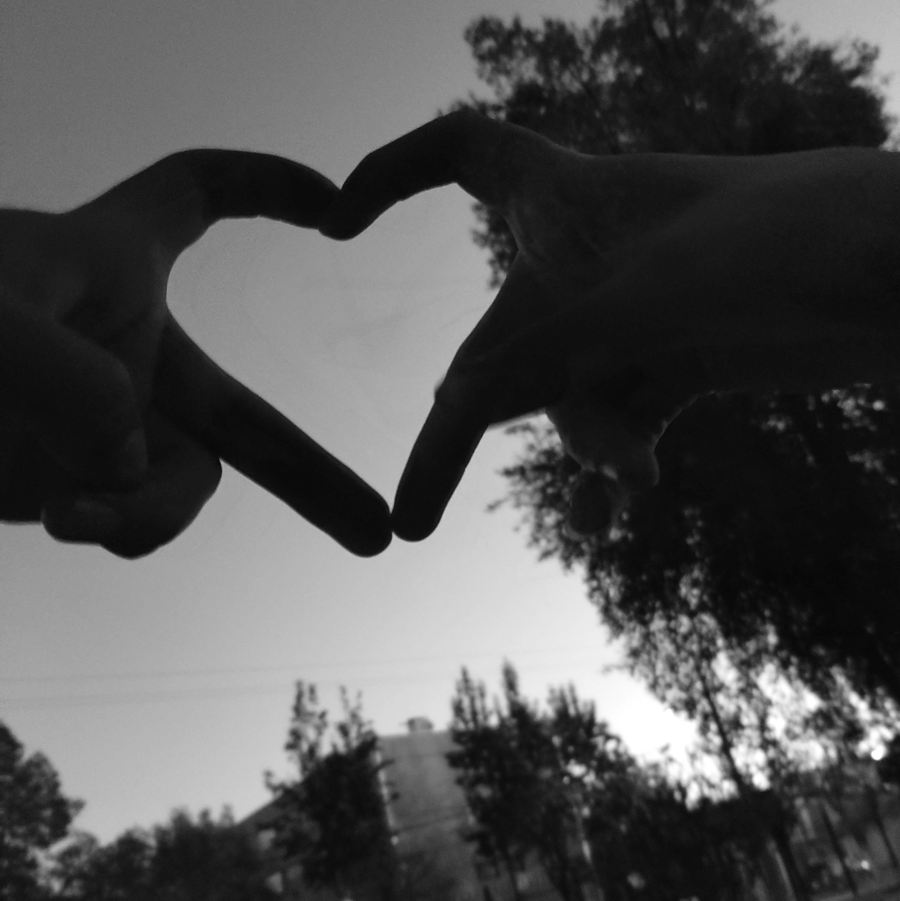


 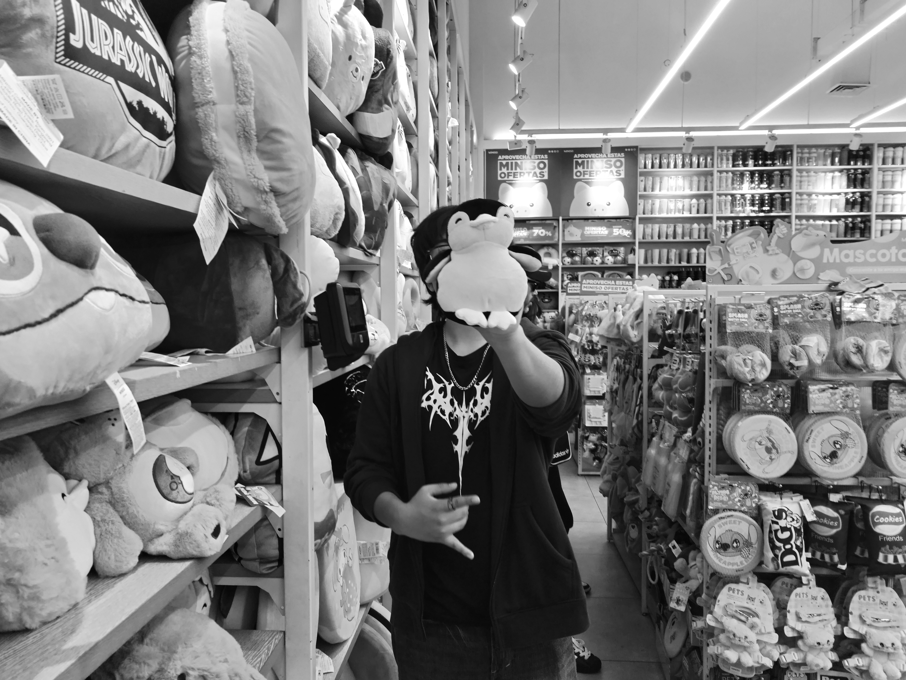
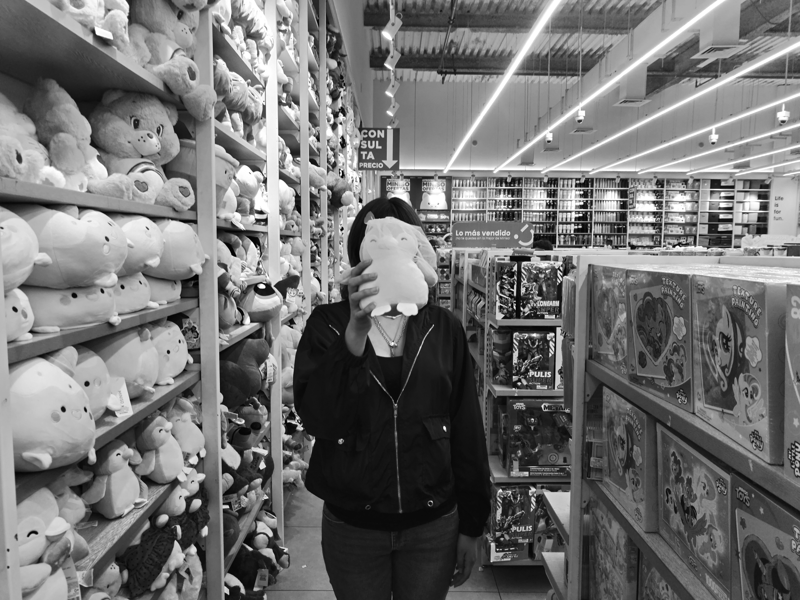
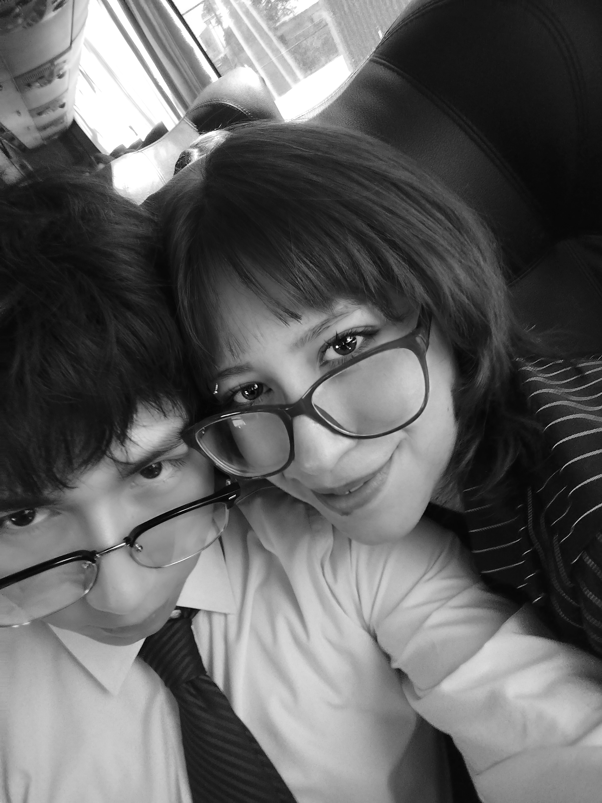
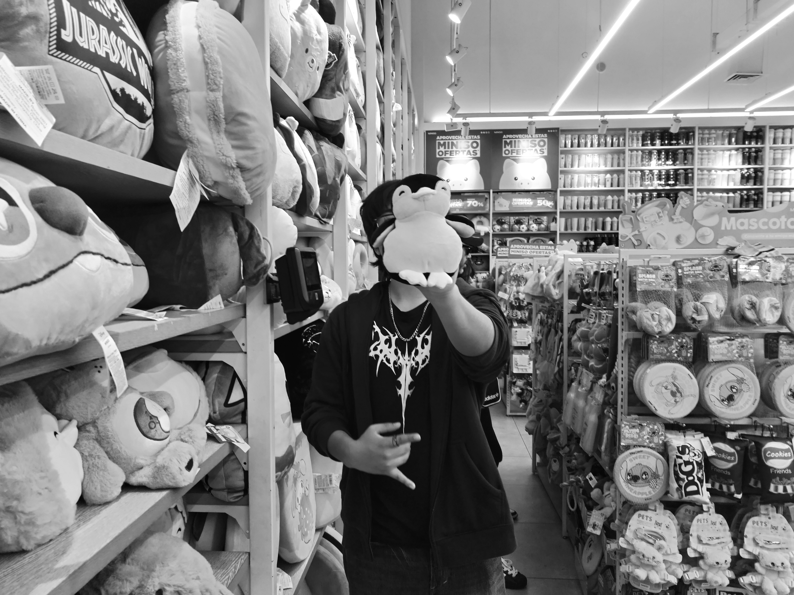
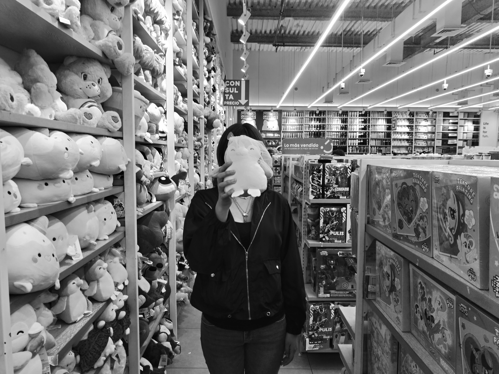
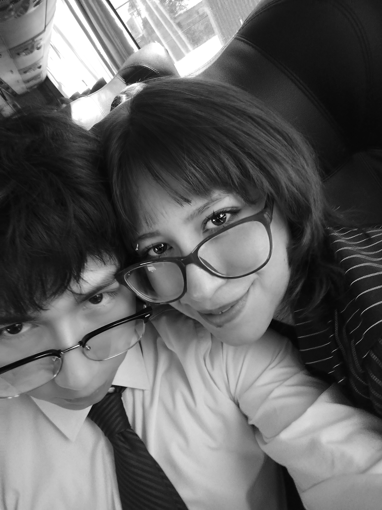

 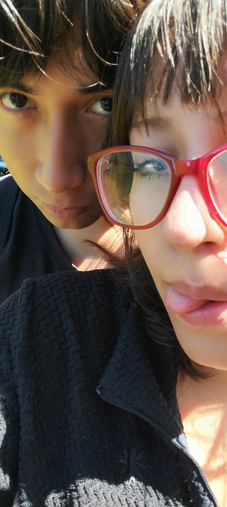
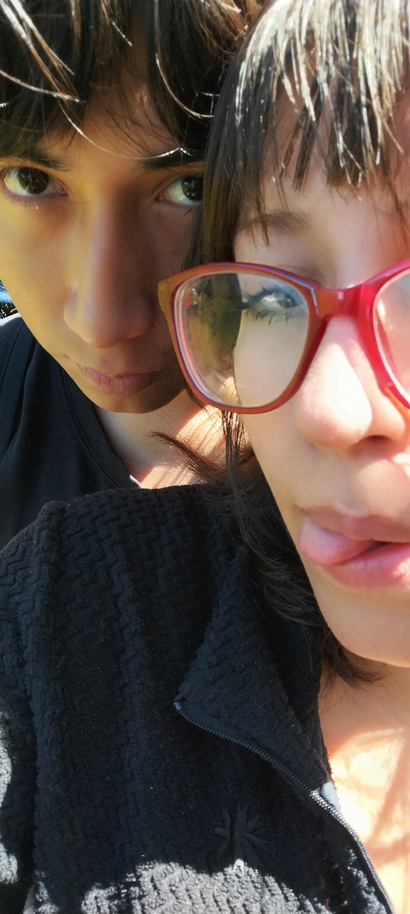
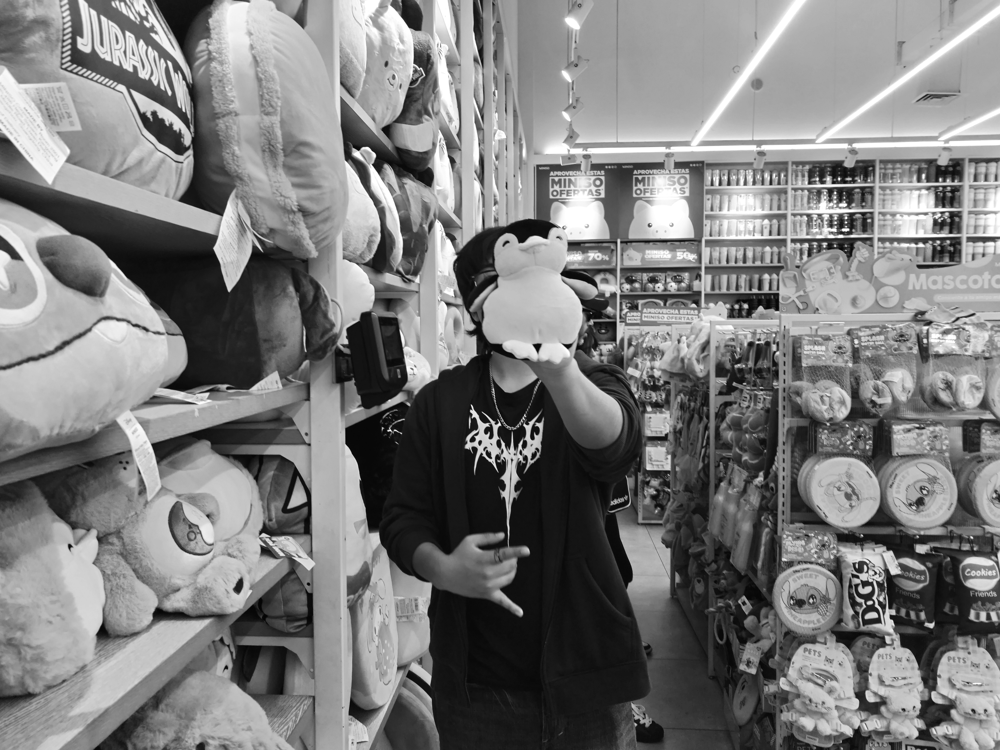
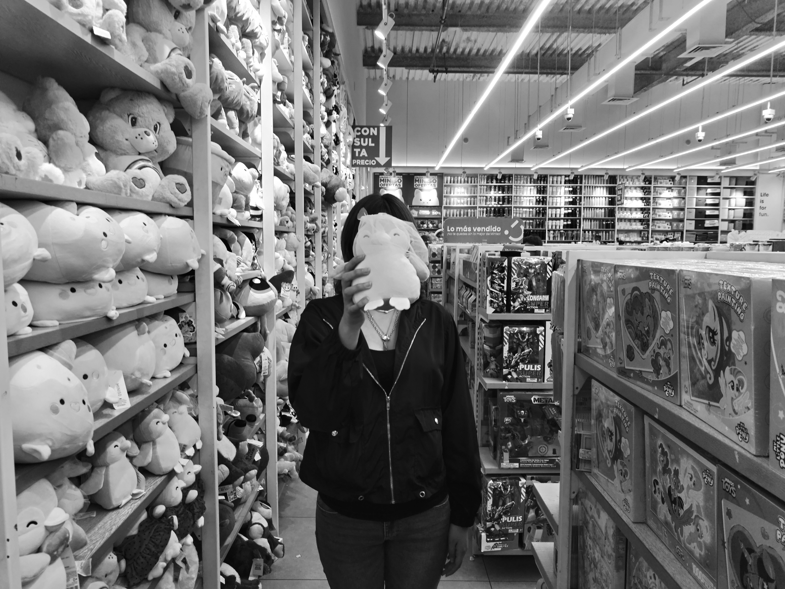
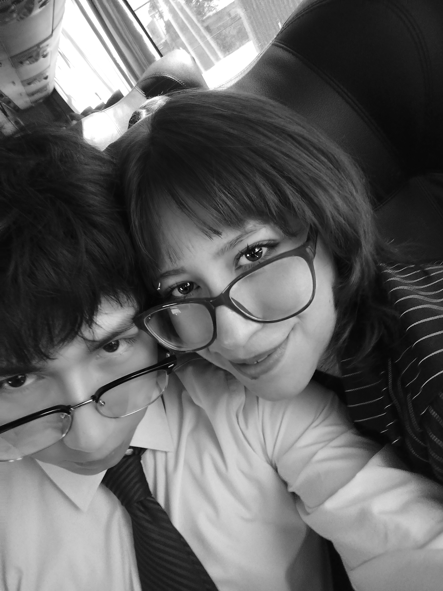
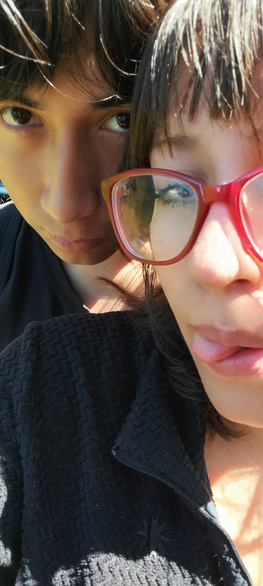